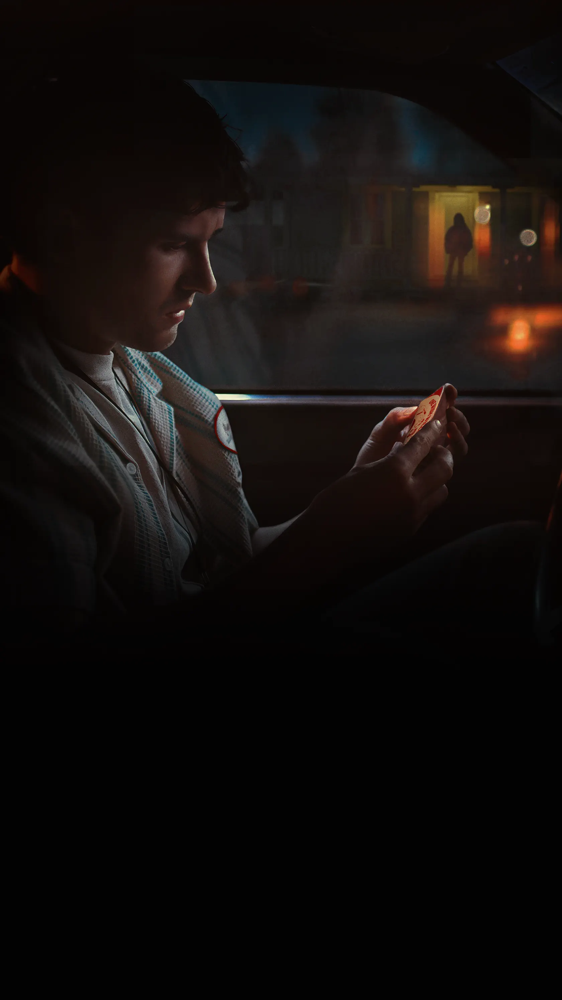

← Voltar para os filmesTERROR • SUSPENSE • 2026
Obsessão
Depois de quebrar o misterioso “Salgueiro de Um Desejo” para conquistar o coração de sua paixão, um romântico incurável consegue o que pediu — e descobre que certos desejos cobram um preço sombrio.
Começar a Assistir1 MINUTO = 1 XP
Seu progresso
0 XPneste filme
0/ 108 minutos
Entre na sua conta para salvar seu progresso.